这次要介绍一个 Kubernetes 资源观测工具，实时监控 Kubernetes 集群中各种资源的新建、更新和删除，并实时通知到各种协作软件/聊天软件，目前支持的通知渠道有：
- slack
- hipchat
- mattermost
- flock
- webhook
本次实验环境采用的是腾讯云上TKE托管集群，通知发生采用的是发送到slack上。
申请slack账号
这边首先申请一个个人slack账号，申请后创建一个app，并且创建一个告警channel将app关联上去
创建slack账号
通过企业邮箱去页面 https://slack.com/get-started#/create 创建你的slack命名空间，这里根据提示填写邮箱信息即可。
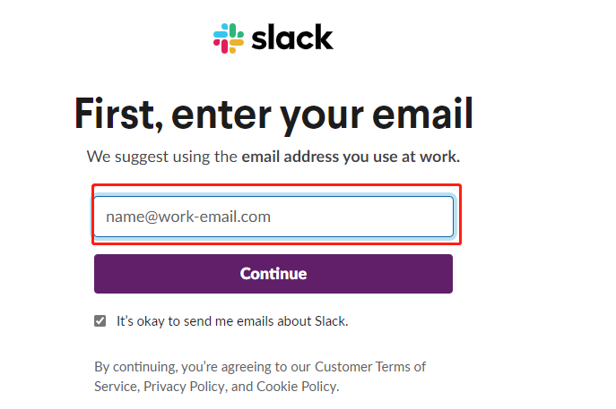
创建APP
通过页面 https://api.slack.com/apps 点击创建New App
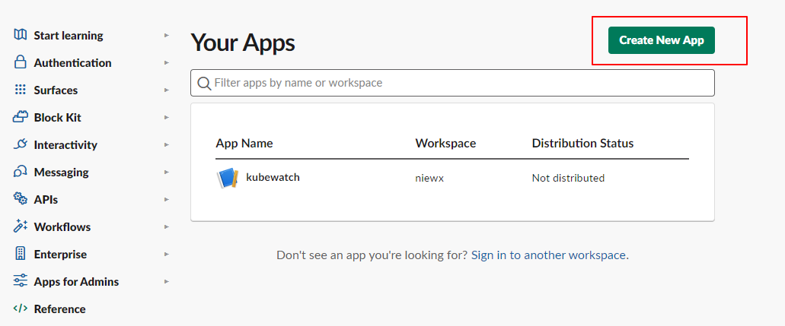
填写你的APP Name和你的workspace，我这里之前创建一个kubewatch的app
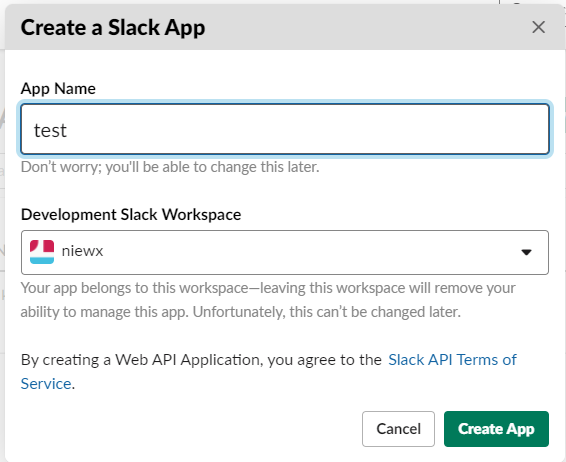
给APP申请权限，这边点击0Auth
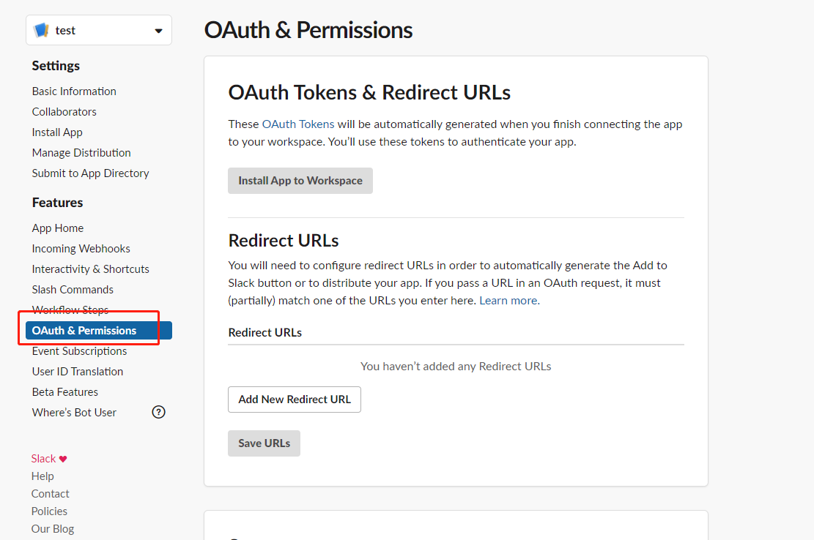
点击添加权限按钮给APP添加权限，这边注意最后给admin的token权限
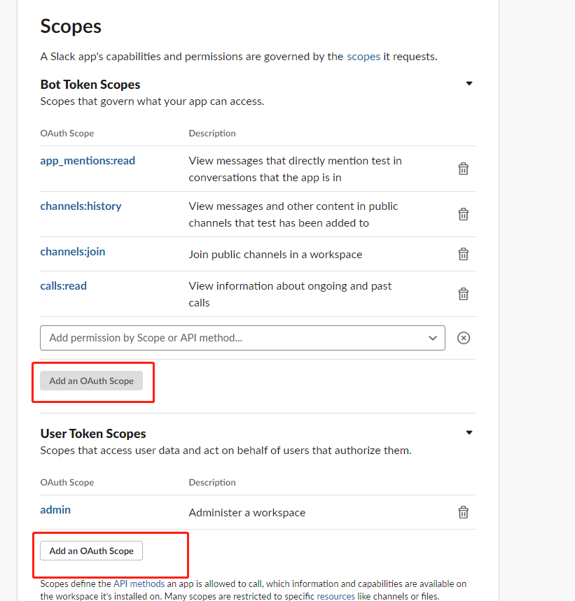
安装APP
添加完权限后，点击安装APP按钮安装到你的workspaces
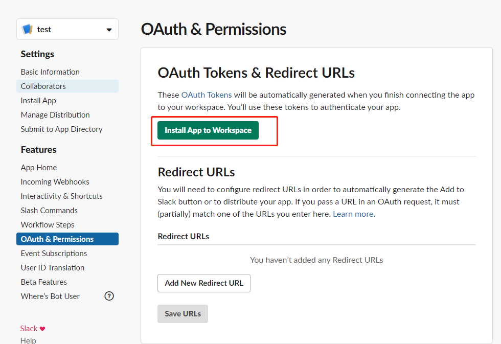
安装完成后，复制保存APP的token。这里后续需要用到，配置到kubewatch的配置文件中。
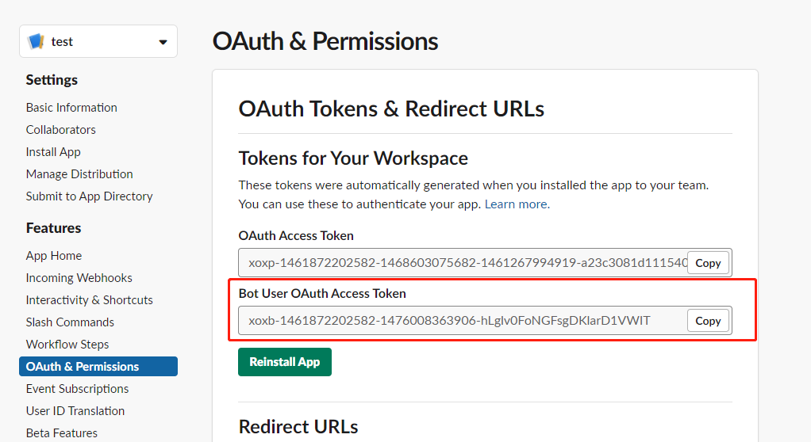
创建channel关联APP接收信息
这里我们创建一个test的channel来接受kubewatch发送的信息
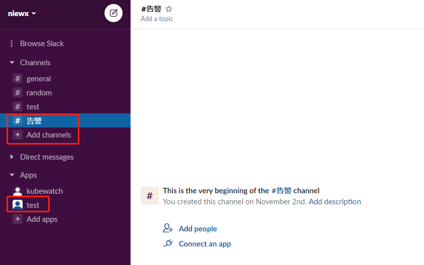
点击Connect an app将kubewatch app关联到test channel
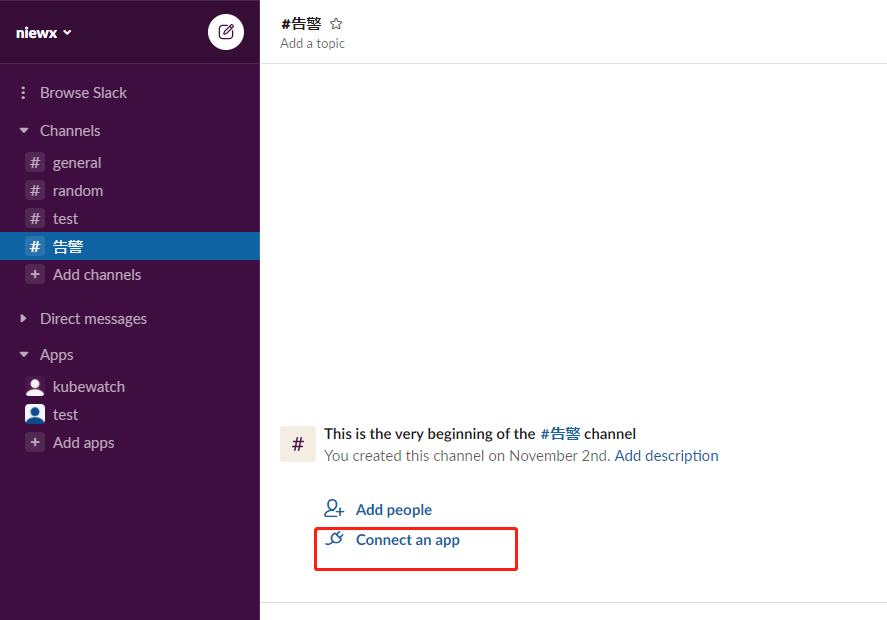
关联成功后，后续消息将会发生到test channel中
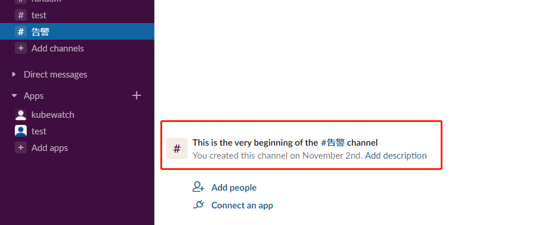
部署kubewatch到k8s集群中
腾讯云控制台部署到TKE集群
点击容器服务的应用页面，选择你的集群，点击新建
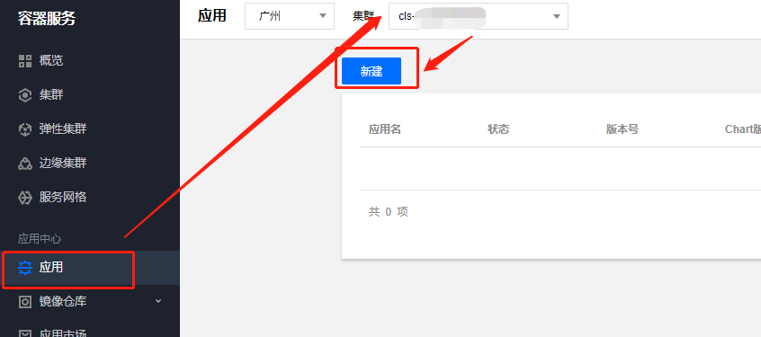
填写你的应用名，所部属的命名空间，选择kubewatch应用，修改value.yaml
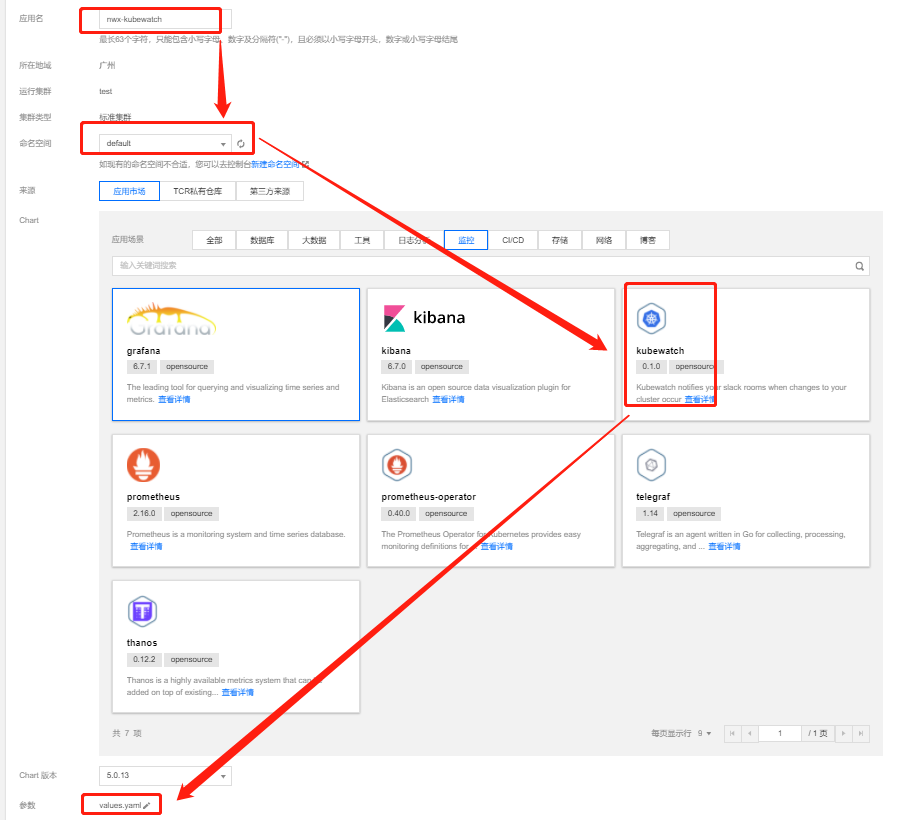
修改enabled为ture，channel为之前接收消息的channel，我这里是test，将之前APP的token填写到token配置项
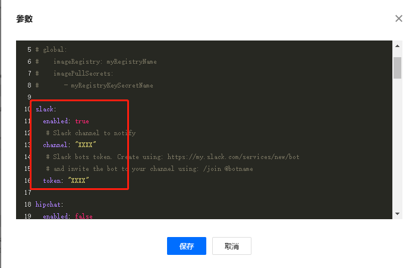
helm命令部署到集群中
通过helm客户端执行命令部署kubewatch，如何安装使用helm可以参考https://cloud.tencent.com/developer/article/1696689
1 | [root@VM-6-17-centos ~]# helm repo add bitnami https://charts.bitnami.com/bitnami |
这里vi修改一下values.yam文件如下,修改enabled为ture，channel为之前接收消息的channel，我这里是test，将之前APP的token填写到token配置项
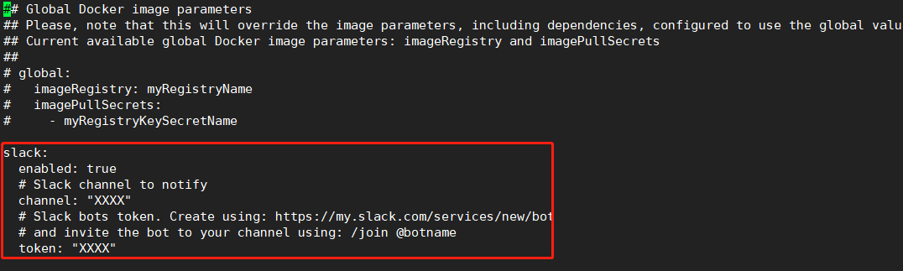
查看pod日志，检查服务是否允许，这边pod出现如下日志，则表示接入slack成功
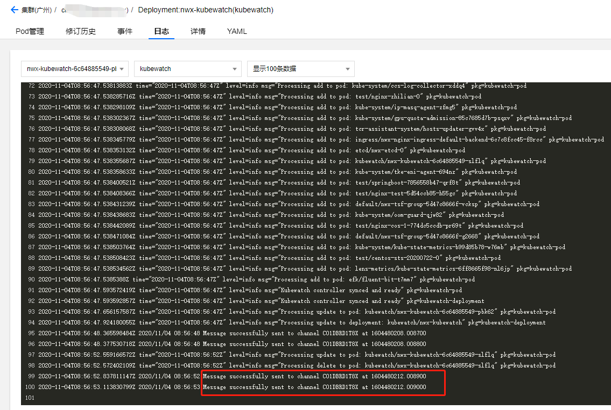
k8s集群资源变更测试
下面我们尝试重建一个pod，看下slack是否会接收到变更信息，我们在test下部署一个busybox的pod
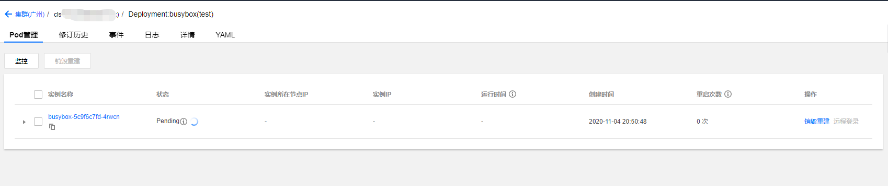
从下图可以发现，slack有接收到变更的信息，说明我们已经成功部署kubewatch监控k8s集群并接入到slack
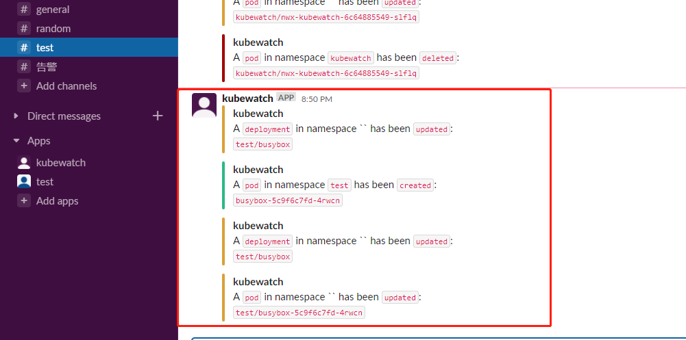

欢迎访问 Vashon 的博客，博客和文章在完善中，请大家耐心等待。 若有问题或者有好的建议欢迎留言，笔者看到之后会及时回复。

...
...